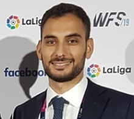

About Me

Profile
I am multi-lingual, highly synergetic and proactive manager with a passion for technology, performance and data-driven decision making. I successfully transitioned in a short period of time from professional coaching into product management and published specialized content that reached over 20k professionals around the world.
My ability to deal with change, both in the workplace and in my personal life, enabled me to exceed expectations across different disciplines. I have a track record of success within the organizations I worked for as well as in my personal initiatives.
Major Roles and Responsibilities
- Experience of working with C-level executives and collaborating with cross functional and multi-cultural teams. Successfully influenced key shareholders to share and execute the product vision.
- Mobile Apps experience: led the development and launch of two Mobile Apps both on iOS and Android, co-ordinating internal developers with the developers of an outsource company.
- Reached over 20k professionals after publishing an article on the website complementarytraining.com. The article included a unique Monitoring System on MS Excel that manages players’ physical data. Various enquiries were received after the publication of the article, which resulted in a total sale of 15 spreadsheets for a total amount of over £1,000.